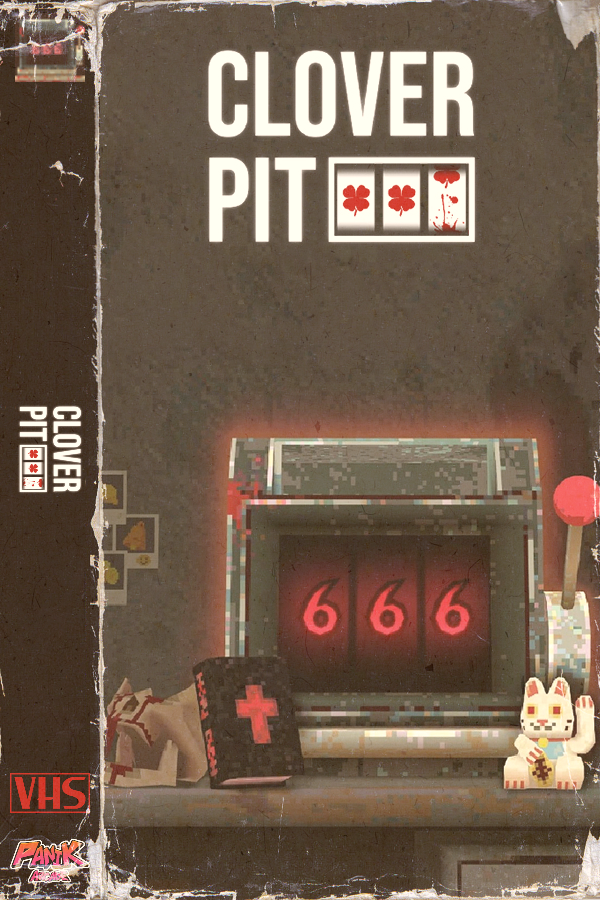

CloverPit
Every archived year-end list appearance, including placement and points earned.
About the Game
CloverPit is the demonic lovechild of Balatro and Buckshot Roulette, a rogue-lite that traps players in a hell of their own creation. Locked in a rusty cell with a slot machine and an ATM, you must pay off your debt at the end of each round, or fall to ruin – literally!Manipulate the slot machine to earn extra coins. Turn the odds in your favor with various prizes and charms that trigger big big combos, snowballing into a dazzling lucky run. Bend the rules, break the game, and pay off your captor long enough to earn a shot at freedom.Features: A gripping rogue-lite where every round could be your last! Meta-progression, seeded runs, unlockable run modifiers and power-ups! Push your score to new heights in Endless Mode! A hellish escape room atmosphere! 150 + items and synergies to boost your luck! A sinister tale of addiction and escape!P.S. IS THIS GAMBLING?Hell no! CloverPit is a rogue-lite horror game, and not a slot machine simulator. Our slot machine is designed to be broken and ultimately overcome, and will never ask you for real money!
| Released | 2025-09-26 |
|---|---|
| Developer | Panik Arcade |
| Publisher | Future Friends Games |
| Genres | Action, Adventure, Strategy, Simulation, Sports, Indie |
| Platforms | PC |
SingleplayerSteam AchievementsFull controller supportSteam CloudFirst-PersonHorrorDark3DRoguelikeMultiple EndingsRogueliteSurreal
Where to Buy
Game information provided by RAWG.
Points by Year
List History
| Year | Source | List | Placement | Points |
|---|---|---|---|---|
| 2025 | Ars Technica | Ars Technica’s Top 20 video games of 2025 | Unranked | 3 |
| 2025 | Forbes | The 20 Best Games Of 2025 | 6 | 5 |
| 2025 | Polygon | The 50 best games of 2025, as chosen by Polygon | 35 | 1 |